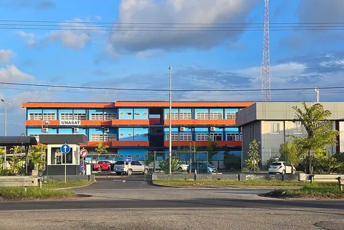
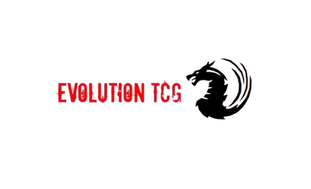

Grounded & reliable
Surinamese, based in Paramaribo. Family retail taught me discipline, customer respect, and keeping operations running under pressure.
About me
Grounded retail experience meets software curiosity — I show up reliably for customers and teams while learning to build systems that make everyday work easier.
Contact meSurinamese, based in Paramaribo. Family retail taught me discipline, customer respect, and keeping operations running under pressure.
At UNASAT I grow in Java, web dev, Arduino, and Moder Technical tools for the regular developer — iterating until the solution actually works for people.
What keeps me strategic, creative, and recharged outside of code — linked like threads on a web.
Favorites: Uncharted, Marvel Rivals, and Call of Duty: Black Ops 2.
Favorites: Daredevil, Spider-Man, and Naruto.
Yu-Gi-Oh! is my favorite; I also play Magic: The Gathering.
My favorite team is FC Barcelona. Mind sports and watching matches keep me competitive and patient.
Schools that shaped my path — connected like nodes on a spider-web.
Foundation years at Lyco1 — analytical thinking, languages, and discipline before higher ICT studies.

Propaedeutic diploma (2025). Programming fundamentals, software design, and applied project work.
Each node on the web is a role that shaped how I work.
Reference: Mrs. Zalifa Mohamed — zalifajamila@gmail.com
Reference: Dhr. Eros Mungra — info@smartsuriname.sr
Reference: Mr. Justin Sapoen — gsapoen@gmail.com

Reference: Mr. Everton L. Tsai — eoteurope@gmail.com